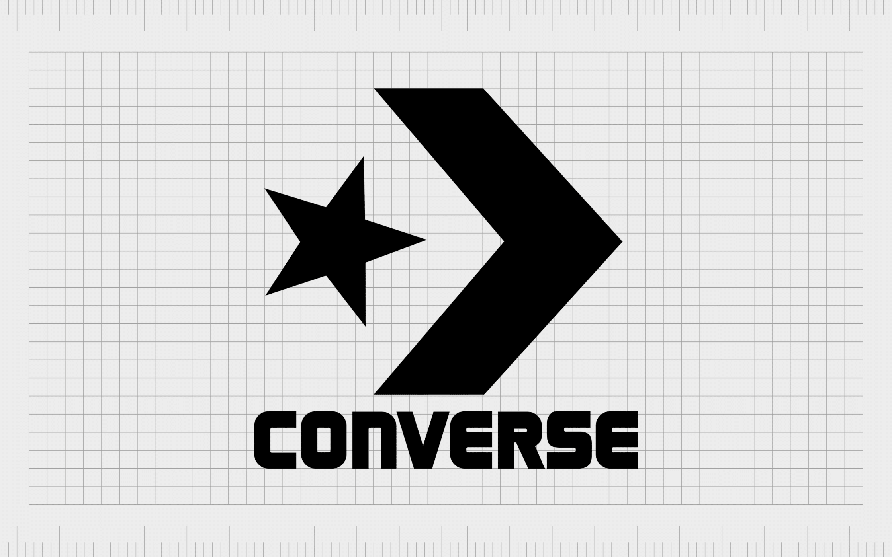

Sepatu Converse
Converse

Converse adalah sebuah perusahaan sepatu asal Amerika dengan hasil produksi yang terutama terdiri dari alas kaki berjenis olahraga dan brand Supreme gaya hidup. Perusahaan telah berdiri sejak tahun 1908 dan, pada tahun 2003, dibeli senilai $ 305.000.000 (USD) sebagai anak perusahaan dari Nike, Inc. Converse memproduksi produk di bawah nama dagang seperti One Star, Chuck Taylor All Star, And1 shoes. Sepatu converse dibedakan dengan sejumlah fitur, termasuk motif lencana bintangnya. Bahkan, sol karet All Star, halus bulat disekitaran di atas, dan melengkung di sekitar jalur telah menjadi khas yang begitu dikenali, pada tahun 2014, Converse mengajukan gugatan ke Komisi Perdagangan Internasional AS yang menuduh Walmart, Skechers, Kmart, dan 28 pengecer lain beserta produsen dengan masalah pelanggaran merek dagang. Dalam upaya untuk melestarikan keaslian sepatu selain fungsinya. Sejumlah perkara diselesaikan, termasuk Fila dan Iconix. Selain alas kaki, perusahaan menjual barang-barang lainnya secara global melalui pengecer di lebih dari 160 negara dan melalui sekitar 75-perusahaan milik toko ritel di Amerika Serikat.
Contoh Sepatu Converse

Converse Chuck Taylor All Star 70s Low Ox
Converse Chuck Taylor All Star 70s Low Ox berwarna klasik hitam-putih (Black/Egret) yang difoto dari sisi samping luar dengan latar belakang abu-abu polos. Sepatu kasual bermodel potongan pendek (low-top) ini memperlihatkan karakteristik khas seri Chuck 70 seperti bahan upper kanvas hitam tebal dengan jahitan putih kontras (winged tongue stitching) di dekat jemari, serta bagian sol karet (midsole) berwarna putih gading (creamy) yang lebih tinggi dan mengilap (glossy) lengkap dengan garis hitam melingkar (foxing stripe).